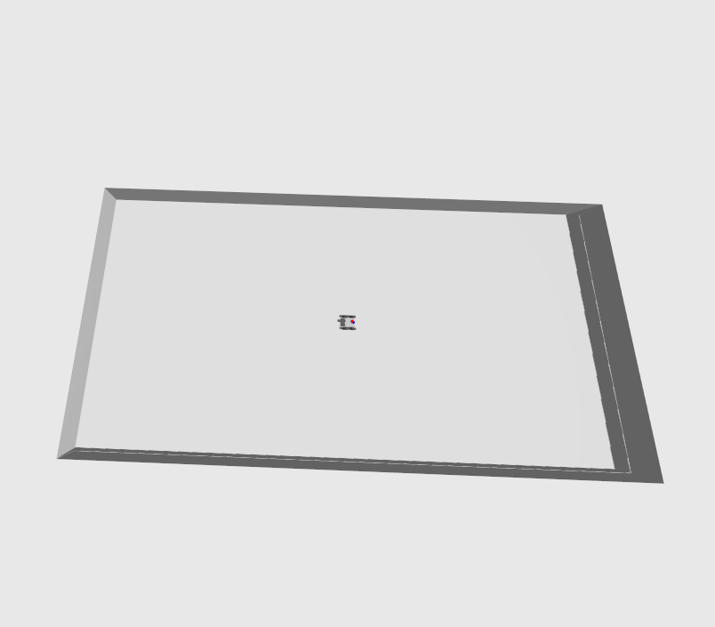
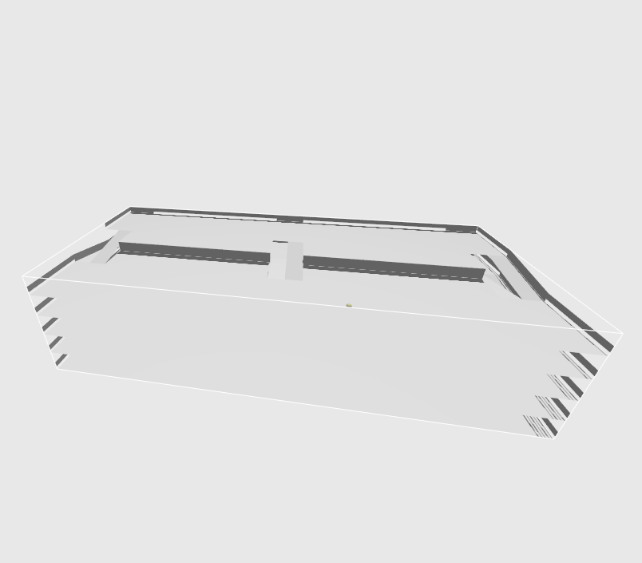

MeshNav Tutorial Worlds
For the tutorials we created a selection of virtual worlds, which we categorized in realistic and simplistic environments. Realistic worlds bring us closer to real-world conditions by modeling complex geometry, textures, and dynamics, which helps evaluate how algorithms perform in practice. Simplistic worlds, on the other hand, keep environments minimal so that examples can run even on low-end hardware and interesting situations can be studied in isolation without unnecessary complexity. This separation ensures both robustness testing under realistic conditions and efficient, focused experimentation when needed.
Simple Worlds
All files are located in the following packages:
- Maps & MeshNav:
mesh_navigation_tutorials - Worlds & Simulation:
mesh_navigation_tutorials_sim
Tray
The most simplistic environment for very simple test cases.
| RViz | Gazebo |
|---|---|
 |
 |
ros2 launch mesh_navigation_tutorials mesh_navigation_tutorials_launch.py world_name:=tray
Floor Is Lava
A more sophisticated environments where the robot could fall down a bridge (into lava).
| RViz | Gazebo |
|---|---|
 |
 |
ros2 launch mesh_navigation_tutorials mesh_navigation_tutorials_launch.py world_name:=floor_is_lava
Parking Garage
A simple multi-story parking garage, demonstrating how mesh navigation enables efficient planning across different floors.
| RViz | Gazebo |
|---|---|
 |
 |
ros2 launch mesh_navigation_tutorials mesh_navigation_tutorials_launch.py world_name:=parking_garage
Download
All simple maps are automatically available after cloning the repository.
Real World Worlds
Additionally, we provide larger maps that more closely resemble real-world scales. Because these maps also have a large file size, we use Git LFS to store them efficiently and to make downloading parts of the repository more manageable.
Pluto Maps
Originally used to benchmark the findings in the very first publications they are now revived for ROS 2. You can find the very first version of the code here: https://github.com/uos/pluto_robot.
All files are located in the following packages:
- Maps & MeshNav:
mesh_navigation_pluto - Worlds & Simulation:
mesh_navigation_pluto_sim
Physics Campus UOS
Physics building at Campus Westerberg, Osnabrück University.
| ID | Vertices | Triangles | Dimensions: x[m], y[m], z[m] | File Size |
|---|---|---|---|---|
physics_campus_uos |
813 674 | 1 804 965 | 166.02 * 83.61 * 26.33 | 35M |
ros2 launch mesh_navigation_pluto mesh_navigation_pluto_launch.py world_name:=physics_campus_uos
Botanical Garden Osnabrück
| ID | Vertices | Triangles | Dimensions: x[m], y[m], z[m] | File Size |
|---|---|---|---|---|
botanical_garden_osnabrueck |
711 417 | 1 404 396 | 39.05 * 49.25 * 6.67 | 34M |
ros2 launch mesh_navigation_pluto mesh_navigation_pluto_launch.py world_name:=botanical_garden_osnabrueck
Stone Quarry Brockum
| ID | Vertices | Triangles | Dimensions: x[m], y[m], z[m] | File Size |
|---|---|---|---|---|
stone_quarry_brockum |
927 102 | 1 881 428 | 100.58 * 100.58 * 23.94 | 37M |
ros2 launch mesh_navigation_pluto mesh_navigation_pluto_launch.py world_name:=stone_quarry_brockum
Download
While being in the source directory of this repository, download all Pluto maps by entering
git lfs pull --include="mesh_navigation_pluto*"
or specific ones by calling
git lfs pull --include="mesh_navigation_pluto*/**/physics_campus_uos*"
Ceres Maps
Coppenrath Innovation Centre (CIC) Outdoors
The CIC building contains tech companies and research facilities that focus on AI & Robotics. Nature Robots is situated there as well as DFKI and UOS.
| ID | Vertices | Triangles | Dimensions: x[m], y[m], z[m] | File Size |
|---|---|---|---|---|
cic_outdoor |
1 067 684 | 1 967 419 | 284.06 * 276.64 * 26.3 | 57M |
| RViz | Gazebo |
|---|---|
ros2 launch mesh_navigation_ceres mesh_navigation_ceres_launch.py world_name:=cic_outdoor
Agro-Technicum
Building of Osnabrück University of Applied Sciences and Osnabotics.
| ID | Vertices | Triangles | Dimensions: x[m], y[m], z[m] | File Size |
|---|---|---|---|---|
agrotechnicum |
402 076 | 681 761 | 129.1 * 143.25 * 16.1 | 15M |
| RViz | Gazebo |
|---|---|
ros2 launch mesh_navigation_ceres mesh_navigation_ceres_launch.py world_name:=agrotechnicum
FH Aachen (MASKOR)
The campus of FH Aachen digitalized from the MASKOR institute.
| ID | Vertices | Triangles | Dimensions: x[m], y[m], z[m] | File Size |
|---|---|---|---|---|
fh_aachen |
1 191 523 | 2 350 458 | 245.97 * 370.9 * 39.43 | 48M |
| RViz | Gazebo |
|---|---|
ros2 launch mesh_navigation_ceres mesh_navigation_ceres_launch.py world_name:=fh_aachen
Download
While being in the source directory of this repository, download all Pluto maps by entering
git lfs pull --include="mesh_navigation_ceres*"
or specific ones by calling
git lfs pull --include="mesh_navigation_ceres*/**/cic_outdoor*"